Diagnóstico 360°
Anamnese profunda, exames laboratoriais, histórico de treino, composição corporal e biomarcadores. A linha de partida tem que estar nítida.
Consultoria esportiva de alta performance · Brasília
Consultoria esportiva personalizada para quem trata o corpo como projeto sério. Treino, dieta e protocolos desenhados sob medida — auditados semanalmente pela nossa equipe técnica.
Metodologia FORGE™
Nossa metodologia é construída sobre quatro pilares inegociáveis. Cada aluno passa pelo mesmo rigor técnico — só o protocolo muda. Nada é genérico. Nada é palpite.
Anamnese profunda, exames laboratoriais, histórico de treino, composição corporal e biomarcadores. A linha de partida tem que estar nítida.
Treino, dieta, suplementação e periodização desenhados linha a linha para o seu corpo, sua rotina e seu objetivo. Zero template.
Check-in semanal com fotos, dados e métricas. Ajustes em tempo real. Time técnico responde dúvidas em até 12h. Você não anda sozinho.
Marcos mensuráveis a cada 4 semanas. Recomposição, performance ou competição — o resultado é cobrado e entregue, com dado.
Cases de sucesso
Mais de mil atletas transformados — de praticantes sérios a competidores nacionais. Cada caso documentado. Cada número auditado.
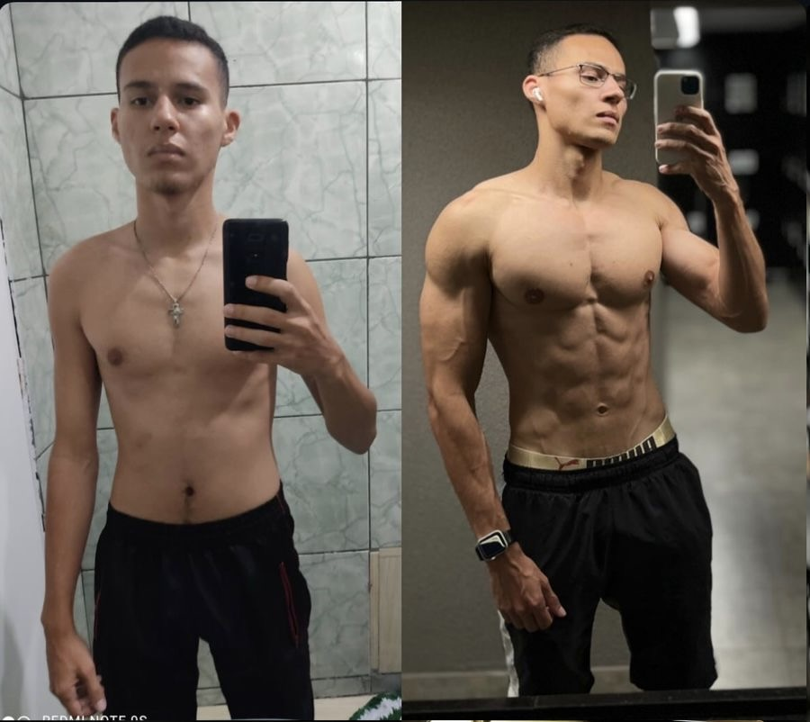
AntesDepoisHipertrofia · transformação completa
“Nunca tive tanto controle do meu corpo. Cada número faz sentido.”Atleta FORGE · Recomp 2025
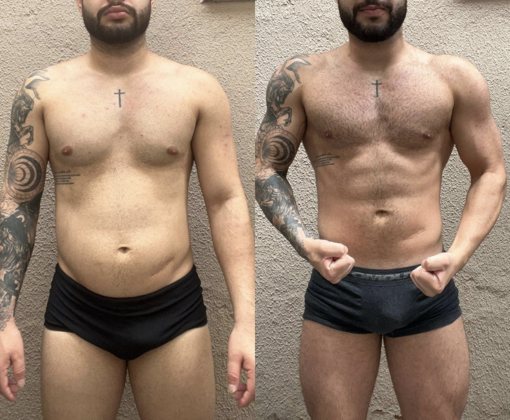
AntesDepoisRecomposição · 32 semanas
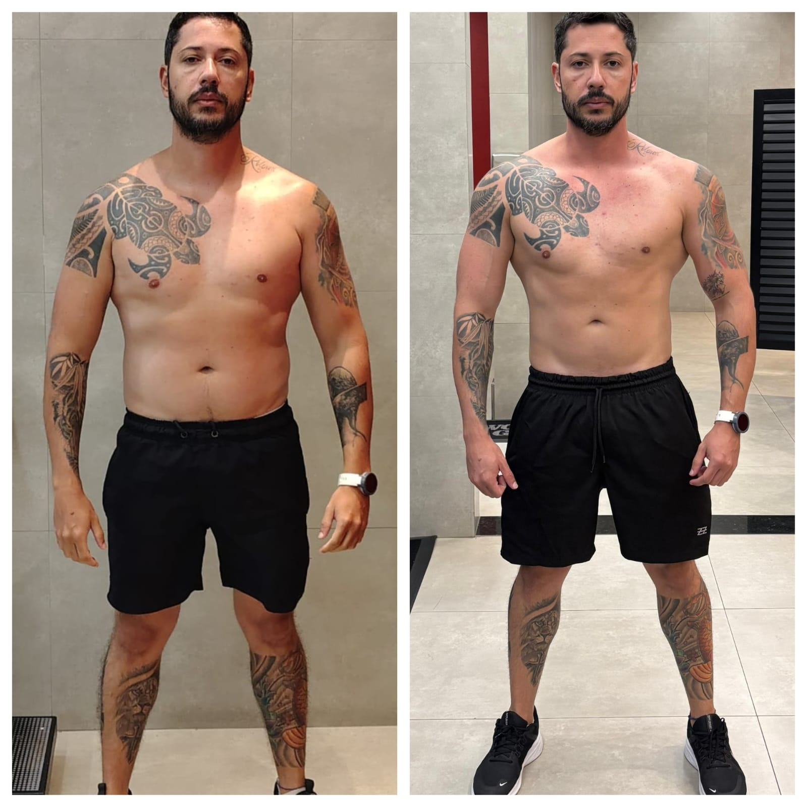
AntesDepoisDefinição
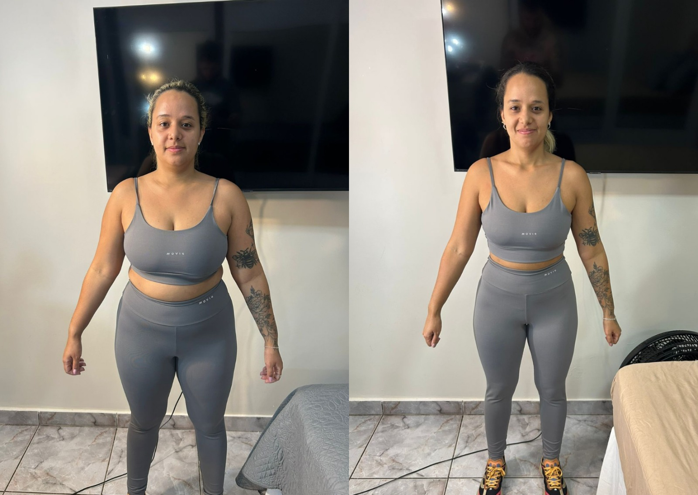
AntesDepoisRecomposição feminina · 36 semanas
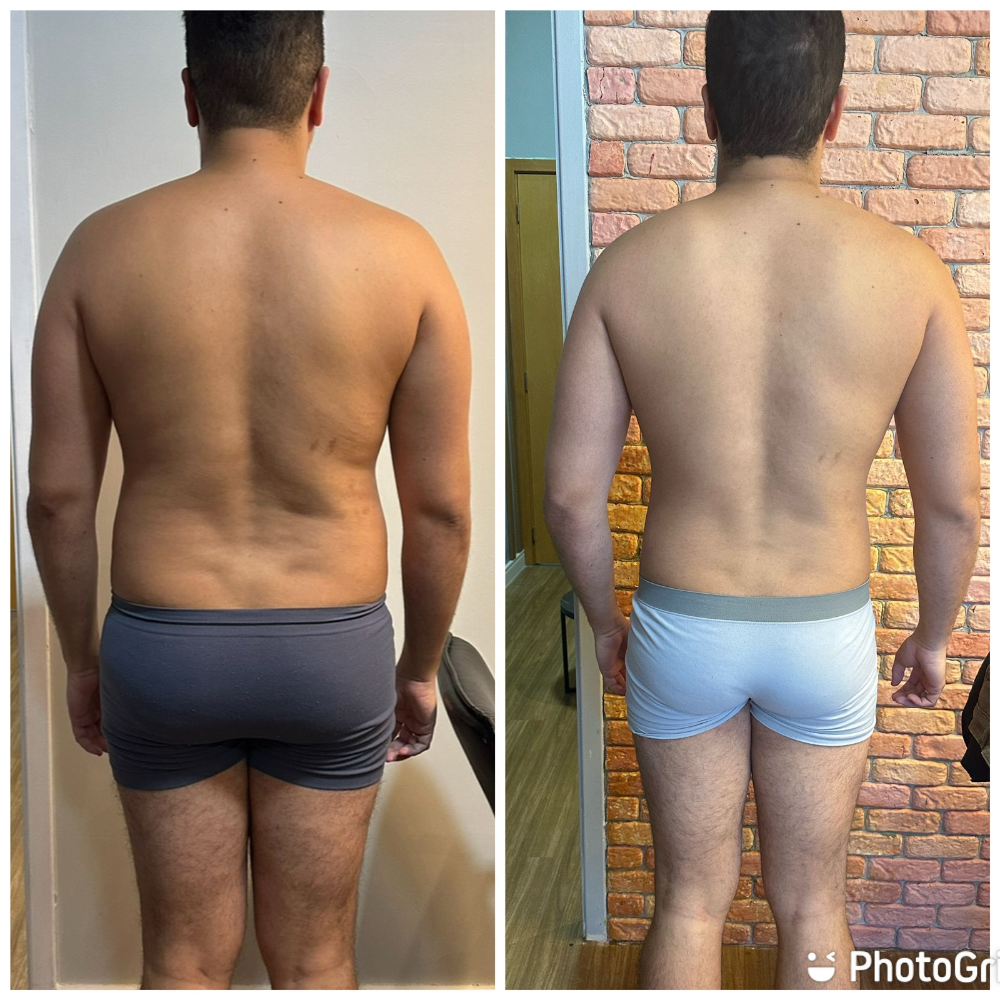
AntesDepoisRecomp · 28 semanas
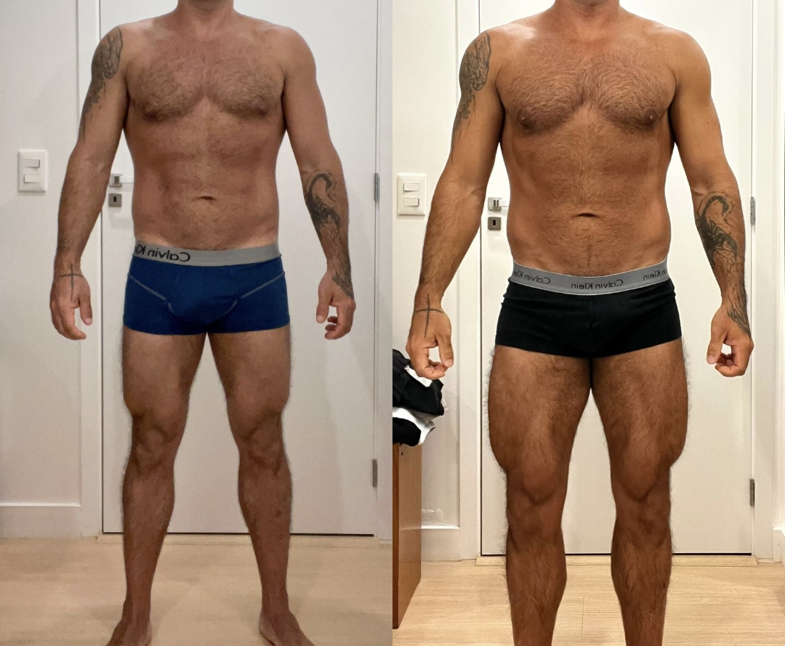
AntesDepoisCutting · 20 semanas
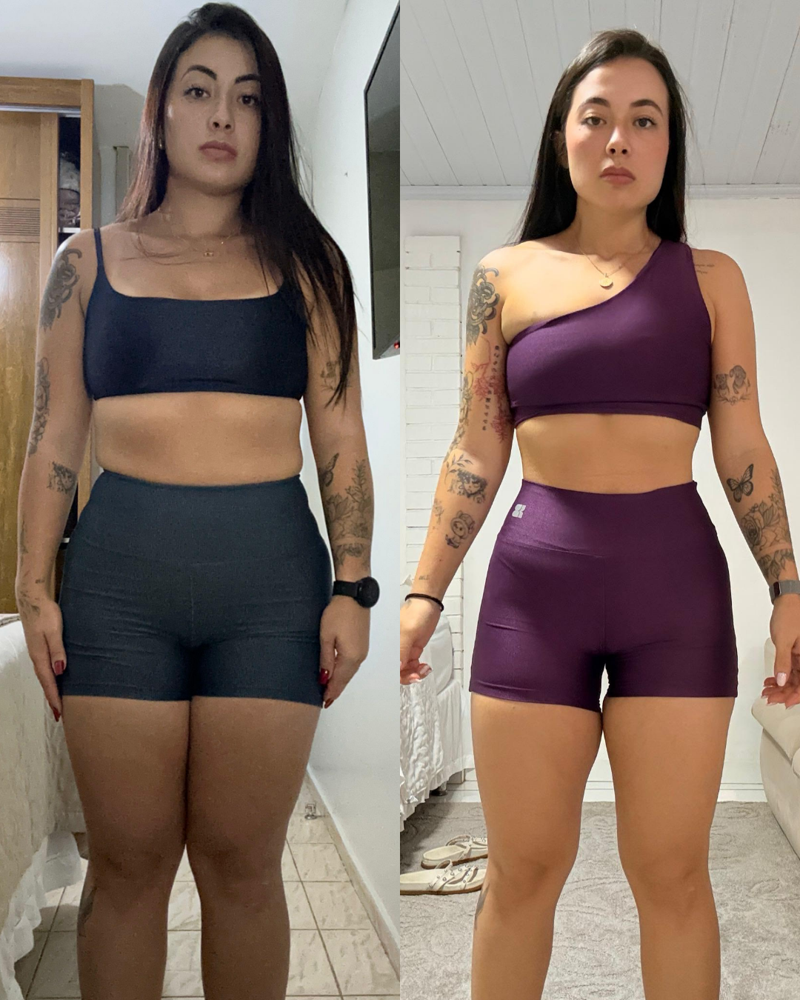
AntesDepoisEmagrecimento · 24 semanas
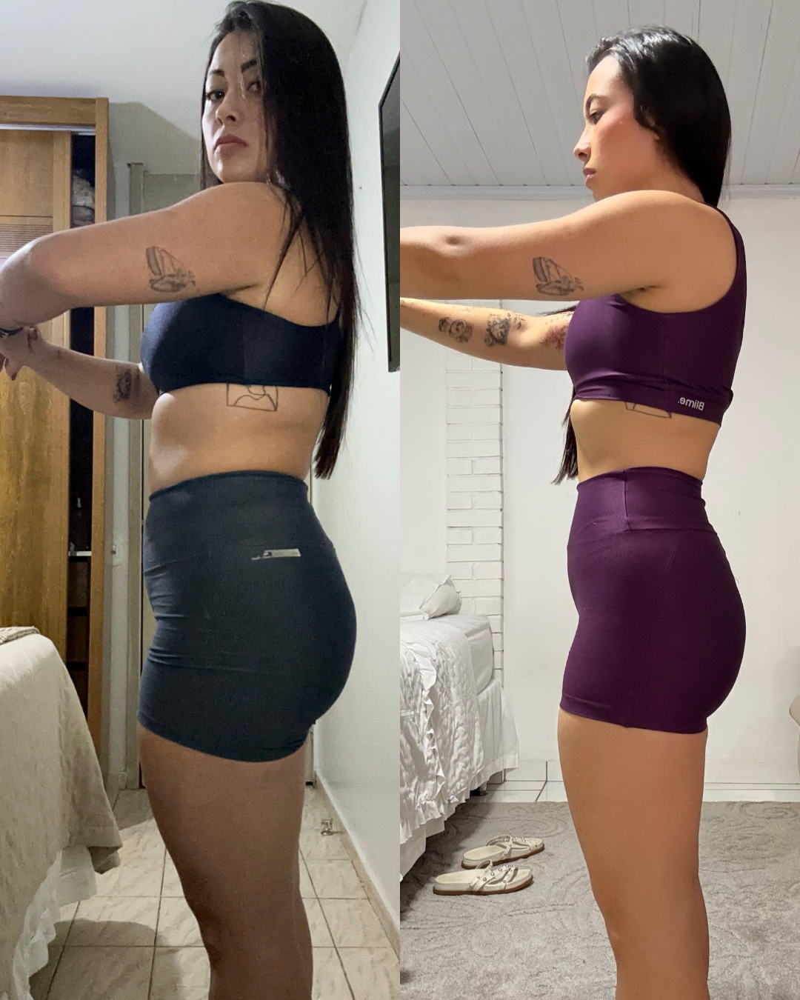
AntesDepoisRecomp · perfil lateral
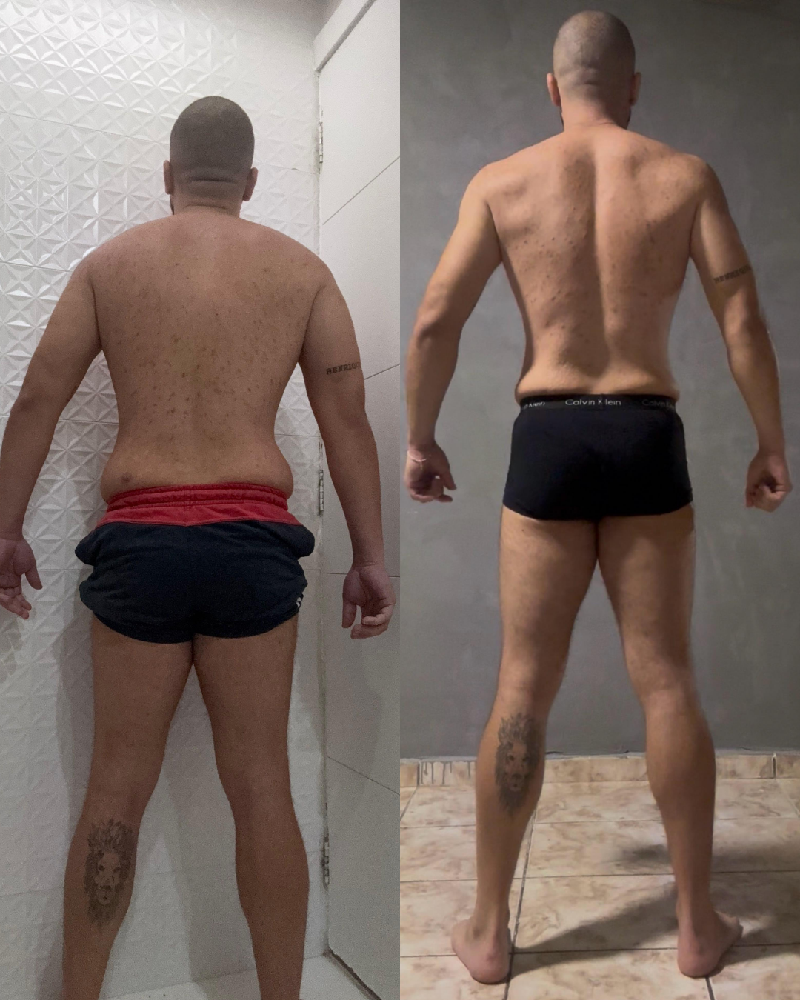
AntesDepoisCutting · 32 semanas
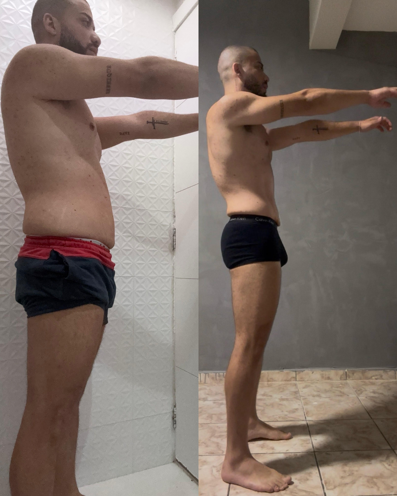
AntesDepoisDefinição · perfil lateral
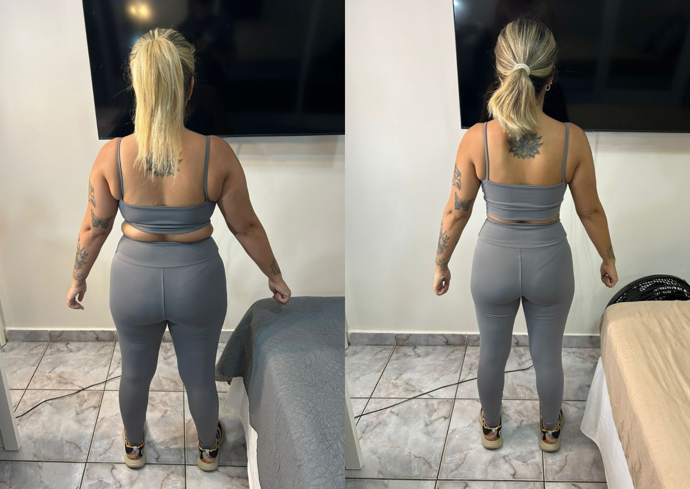
AntesDepoisRecomp · vista posterior
Protocolos personalizados
Cada protocolo é construído por uma equipe multidisciplinar — treinador-chefe, nutricionista esportivo e médico parceiro. Nada de planilha pronta.
Periodização linear ou ondulatória, divisão sob medida, vídeo-execução de cada exercício e progressão monitorada por RPE/RIR.
Plano alimentar com lista de substituições inteligentes, ajuste de macros por fase, refeed e estratégias para vida real.
Todo e qualquer recurso para aumentar performance: manipulados fitoterápicos, suplementação avançada, dosagens precisas e — quando aplicável — orientação ergogênica com médico parceiro.
LISS, HIIT, Z2, mobilidade e protocolo de sono. Cardio que serve ao objetivo, não que zera energia para treinar.
Periodicidade ajustada à sua realidade — semanal, quinzenal ou a cada 10 dias. Você manda foto, peso e dados; recebe ajuste técnico assinado pelo treinador.
Estratégias comportamentais para manter consistência. Porque dieta perfeita que você não segue não serve para nada.
Área do aluno
Plataforma exclusiva onde mora seu treino do dia, dieta personalizada, protocolo, vídeos e check-in. Tudo sincronizado. Tudo seu.
Acesse seu treino com vídeo de execução, cargas anteriores, cronômetro de descanso e registro de RPE.
Cardápio do dia, lista de substituições, macros em tempo real e checklist de refeições.
Suplementação, cardio, sono e mobilidade — tudo em um lugar, organizado por fase.
Suba fotos, peso e medidas. Visualize sua evolução em gráfico. Receba ajustes assinados.
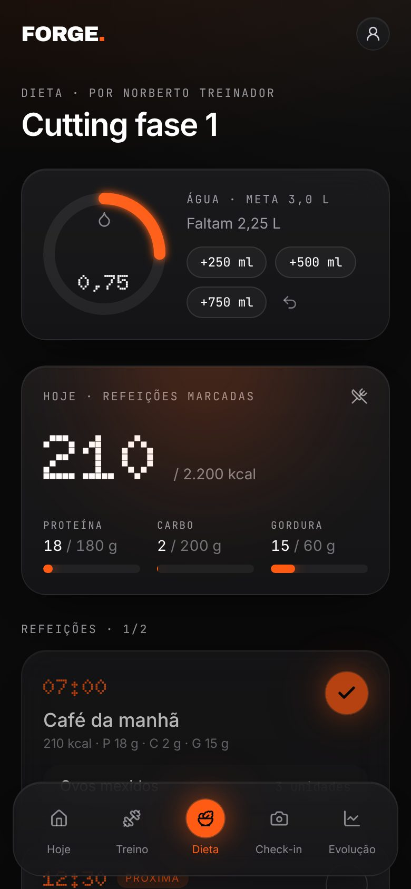
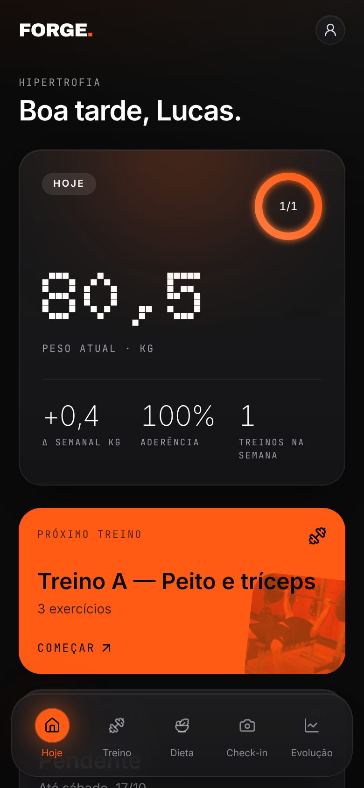
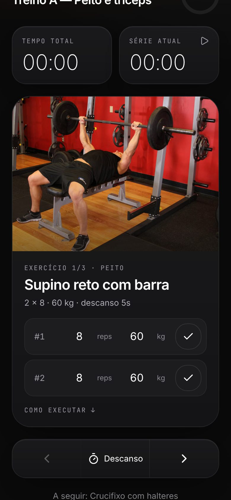
Planos
Três níveis de acompanhamento. Mesma metodologia, mesmo rigor técnico — o que muda é a profundidade do contato e a personalização.
Plano 01
Protocolo completo com acompanhamento técnico via app. Pra quem quer estrutura séria sem precisar de contato direto frequente.
Plano 02
Acompanhamento mais próximo, ajustes mais finos e resposta priorizada. Indicado para competidores e atletas em fase específica.
Plano 03
Máximo nível de individualização. Calls 1-a-1 mensais para alinhamento profundo, feedback completo e estratégia ao seu lado.
Dúvidas frequentes
As respostas honestas para as perguntas que todo aluno faz antes de começar.
Pessoas que querem resultado mensurável e topam o processo: praticantes sérios, atletas amadores, competidores e profissionais de alta exigência. Se você quer dieta milagrosa de 7 dias, não somos pra você.
Funciona — desde que você esteja disposto a executar. Iniciantes têm um protocolo de calibração nas primeiras 4 semanas, focado em técnica e adesão.
Mudanças mensuráveis em 4 semanas. Mudanças visíveis em 8–12 semanas. Transformação completa: 6 meses ou mais. Sem promessa de milagre.
Check-in semanal obrigatório com fotos, peso e dados. Ajuste de protocolo toda semana. Resposta a dúvidas em até 12h via app. Reunião mensal por vídeo com o treinador.
Investimento varia por nível de acompanhamento (Standard, Pro, Elite). Aplique e nossa equipe envia a proposta personalizada após o diagnóstico inicial.
Sim, mas hipertrofia avançada exige carga progressiva real. Adaptamos para o equipamento que você tem — com transparência sobre o teto de resultado de cada cenário.